Hyderabad
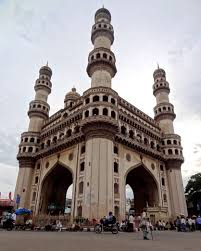
Charminar
Iconic monument and mosque with four minarets.

Golconda Fort
Historic fort known for its acoustics and light & sound show.
Salar Jung Museum
Museum with a vast collection of art, artifacts, and antiques.
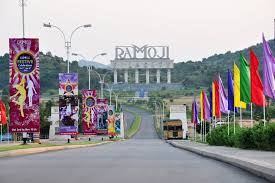
Ramoji Film City
Largest film studio complex in the world, offering tours and entertainment.

Qutub Shahi Tombs
Tombs of the Qutub Shahi dynasty rulers, known for their architectural splendor.
Warangal
Warangal Fort
Ancient fort ruins with temples and stone gateways.
Thousand Pillar Temple
Kakatiya era temple known for its architecture and carved pillars.
Bhadrakali Temple
Temple dedicated to Goddess Bhadrakali.
Nagarjuna Sagar
Nagarjuna Sagar Dam
Largest masonry dam in the world, offering scenic views and boat rides.
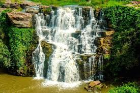
Ethipothala Waterfalls
Scenic waterfall near Nagarjuna Sagar Dam.
Nizamabad

Nizamabad Fort
Historic fort with architectural remains.

Nizamabad Archaeological Museum
Museum showcasing artifacts from the region's history.
Karimnagar
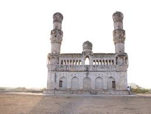
Elgandal Fort (Golconda of Karimnagar)
Fort with historical significance and panoramic views.
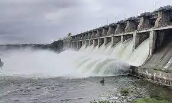
Lower Manair Dam
Dam with a park and boating facilities.
Khammam
Khammam Fort
Hilltop fort with ancient ruins and views of the city.
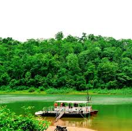
Kinnerasani Wildlife Sanctuary
Wildlife sanctuary with diverse flora and fauna.
Adilabad
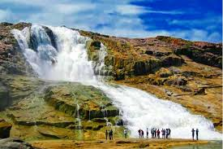
Kuntala Waterfalls
Highest waterfall in Telangana, surrounded by lush greenery.
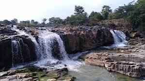
Pochera Waterfalls
Scenic waterfall with natural pools for swimming.
Mahabubnagar
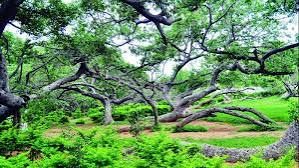
Pillalamarri
Banyan tree with a canopy covering an area of 3 acres.
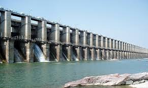
Jurala Dam
Scenic dam on the Krishna River, offering boating and fishing.
Other Attractions
Medak Church
One of the largest churches in India, known for its stunning architecture.

Warangal Kakatiya Ruins
Ruins of the Kakatiya dynasty with historical significance.
Festivals and Cultural Events
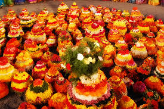
Bathukamma
Floral festival celebrated during Navratri with colorful flower arrangements.
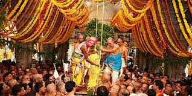
Deccan Festival
Cultural festival showcasing Telangana's music, dance, and cuisine.
Adventure and Nature Activities
Trekking and Hiking
Opportunities in various hills and nature reserves.
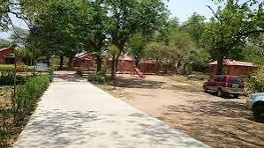
Wildlife Sanctuaries
Explore diverse wildlife in sanctuaries like Kawal Wildlife Sanctuary.